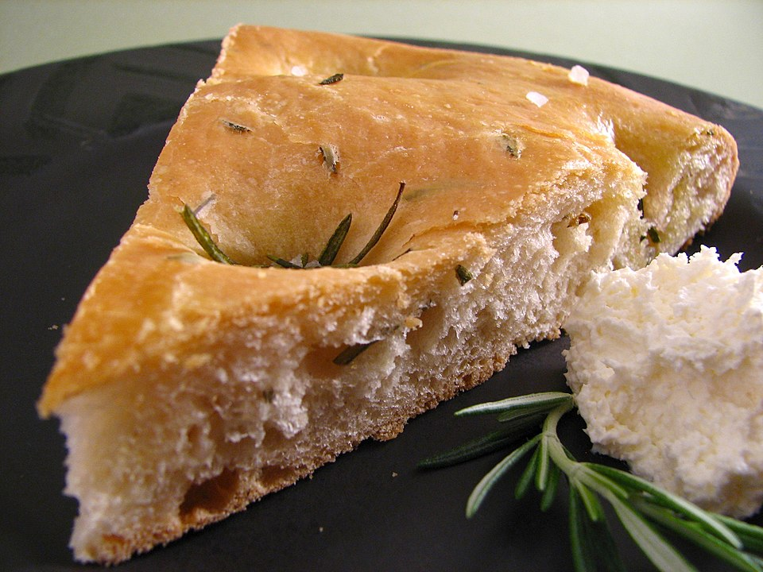

Home
Focaccia

Description
Focaccia is a yeasted flatbread, commonly known as Italian flatbread, that's similar to pizza dough but with more yeast and a more bread-like result. It's characterized by a dimpled surface and a tender, fluffy interior.
Ingredients
- 1/2 cup (120ml) extra-virgin olive oil
- 2 garlic cloves, finely minced
- 1 tablespoon chopped fresh rosemary or 1 teaspoon dried
- 1 tablespoon chopped fresh thyme or 1 teaspoon dried
- 1/4 teaspoon fresh ground black pepper
- 1 cup (235ml) lukewarm water (110°F to 115°F)
- 2 ¼ teaspoons instant yeast, one 1/4-ounce packet
- 1/4 teaspoon sugar, honey, or maple syrup
- 2 ½ cups (325g) all-purpose flour
- 1 teaspoon fine sea salt
Steps
Dough
- Combine olive oil, minced garlic, thyme, rosemary, and black pepper in a cold medium skillet. Place the pan over low heat and cook, stirring occasionally, for 5 to 10 minutes or until aromatic. You are not looking to add color to the garlic. Keep the temperature low and remove the skillet from the heat before the garlic browns. Set aside and allow to cool.
- In a large bowl, combine the warm water, yeast, and sugar. Stir a few times, then let it sit for 5 minutes.
- Add 1 cup of the flour and 1/4 cup of the infused garlic-olive oil mixture to the bowl with yeast. Stir 3 to 4 times until the flour has moistened. Let sit for another 5 minutes.
- Stir in the remaining 1 ½ cups of flour and the salt. When the dough comes together, transfer it to a floured board and knead 10 to 15 times until smooth.
- Transfer the dough to a large oiled bowl, cover with a warm, damp towel, and let it rise at room temperature until doubled in size, for 1 to 2 hours. (See tips below if you’d prefer to proof the dough overnight in the fridge.)
Baking
- When the dough has doubled in size, preheat the oven to 450°F (232°C).
- Use two tablespoons of the remaining garlic-olive oil mixture to oil a 9 x 13-inch rimmed baking sheet. See the tips below for other pan sizes.
- Transfer the dough to the baking sheet, then gently press it into the pan. Use your fingers to dimple the dough, then drizzle the top with the remaining garlic-olive oil mixture. Let the dough rise for 20 to 30 minutes until it puffs slightly.
- Bake until golden brown, 15 to 20 minutes, and then let the baked focaccia bread cool completely on a wire rack.